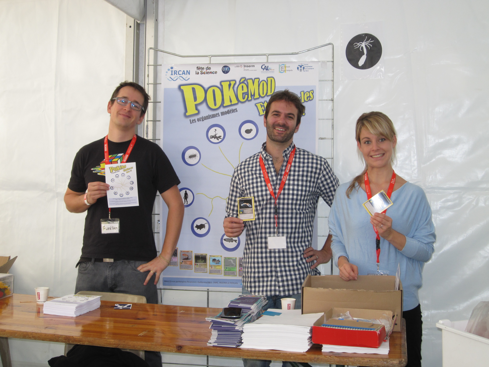
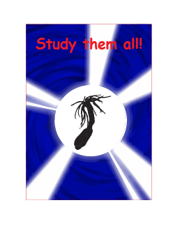

Fete de la science 2016:
We used these cards with much success for the 2016 fete de la science. We 'hid' the cards at different tents that were also hosting activities.
The students would receive a flyer, then have to find the cards by visiting the tents that hosted a activity relating to that organisms.
For example we 'hid' the zebrafish card with at a tent which was demonstrating zebrafish development.
When the students found all ten cards hey were awarded a prize (in our case a 3D printed model organism).
Use in the classroom:
These cards could be used for 'rewards' for correct answers to students over the course of a term.
When the students collect all ten they receive a prize!
Future Directions
We are currently working with partners to produce an accompanying app/game for the cards!
